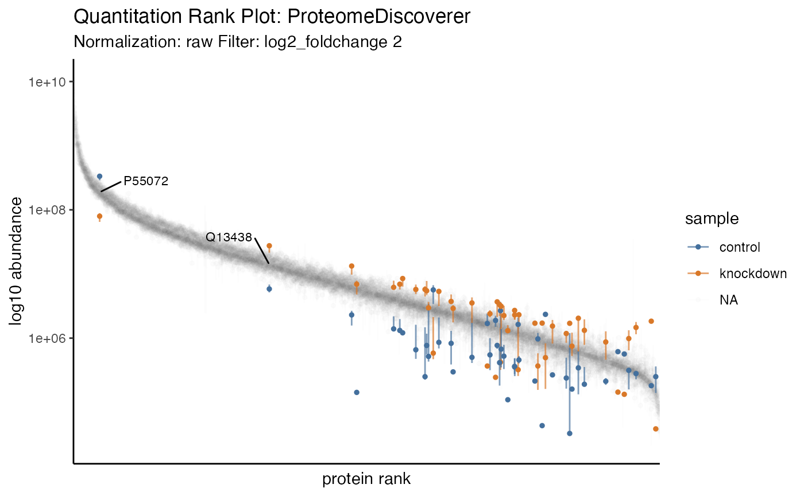

Summarizing
summarizing.RmdSummarizing proteomics data is vital to understanding the bigger
picture and conveying summary stats that set the tone for the larger
analysis. The results of each summary can be directed to via the
destination option to "print" on screen,
"save" to a file or "return" as a tibble.
Printing
The tidyproteomics data object can be printed to show a summary of the object contents.
ecoli_proteins
#>
#> ── Quantitative Proteomics Data Object ──
#>
#> Origin ProteomeDiscoverer
#> proteins (4.13 MB)
#> Quantitation 8 files
#> 2 samples (ko, wt)
#> 2772 proteins
#> 4.8 log10 dynamic range
#> Accounting (4) match_between_runs num_peptides num_unique_peptides num_psms
#> Annotations (9) description gene_id_entrez gene_id_ensemble gene_name
#> biological_process cellular_component
#> molecular_function wiki_pathway
#> reactome_pathway
#> And these can expand to encompass additions generated through other operations.
ecoli_proteins %>% expression(ko/wt) %>% enrichment(ko/wt, .term = 'biological_process')
#> Warning in preparePathwaysAndStats(pathways, stats, minSize, maxSize,
#> gseaParam, : There are duplicate gene names, fgsea may produce unexpected
#> results.
#> ── Quantitative Proteomics Data Object ──
#>
#> Origin ProteomeDiscoverer
#> proteins (4.46 MB)
#> Quantitation 8 files
#> 2 samples (ko, wt)
#> 2772 proteins
#> 4.8 log10 dynamic range
#> Accounting (4) match_between_runs num_peptides num_unique_peptides num_psms
#> Annotations (9) description gene_id_entrez gene_id_ensemble gene_name
#> biological_process cellular_component
#> molecular_function wiki_pathway
#> reactome_pathway
#> Analyses (1)
#> ko/wt -> expression & enrichment (biological_process)
#> Summarizing
Groups
The tidyproteomics data object can summarize the quantitative and accounting data …
ecoli_proteins %>% summary()
#> ── Summary: global ──
#>
#> files protein_groups proteins peptides peptides_unique quantifiable CVs
#> 8 2772 2772 31271 31025 98.5 0.1573717
#> … using columns corrisponing to experimental meta-data …
ecoli_proteins %>% summary(by = 'sample')
#>
#> ── Summary: sample ──
#>
#> sample files protein_groups proteins peptides peptides_unique quantifiable
#> ko 4 2772 2772 31271 31025 98.4
#> wt 4 2772 2772 31271 31025 98.5
#> CVs
#> 0.1380689
#> 0.1612074
#> … terms in the annotation meta-data …
ecoli_proteins %>% summary(by = 'biological_process')
#>
#> ── Summary: biological_process ──
#>
#> biological_process files protein_groups proteins peptides
#> cell adhesion 8 1 1 1
#> cell cycle OR cell proliferation 8 3 3 39
#> cell organization and biogenesis 8 15 15 198
#> cell-cell signaling 8 2772 2772 31271
#> developmental processes 8 3 3 4
#> DNA metabolism 8 2772 2772 31271
#> other biological processes 8 175 175 1262
#> other metabolic processes 8 610 610 8233
#> protein metabolism 8 18 18 332
#> RNA metabolism OR transcription 8 2772 2772 31271
#> signal transduction 8 1 1 18
#> stress response 8 45 45 330
#> transport 8 196 196 1542
#> peptides_unique quantifiable CVs
#> 1 62.5 0.2738303
#> 39 100.0 0.1084535
#> 197 98.4 0.1615593
#> 31025 98.5 0.1573717
#> 4 75.0 0.1980664
#> 31025 98.5 0.1573717
#> 1258 98.4 0.1752463
#> 8179 98.6 0.1511318
#> 332 99.9 0.1944947
#> 31025 98.5 0.1573717
#> 18 100.0 0.1228771
#> 316 93.6 0.1537054
#> 1529 97.6 0.1815972
#> … and even terms in the accounting data …
ecoli_proteins %>% summary(by = 'num_peptides')
#> ℹ Too many variables, limiting to the first 25
#>
#> ── Summary: num_peptides ──
#>
#> num_peptides files protein_groups proteins peptides peptides_unique
#> 99 8 1 1 99 99
#> 91 8 1 1 91 91
#> 80 8 1 1 80 80
#> 75 8 1 1 75 75
#> 72 8 2 2 144 144
#> 68 8 1 1 68 68
#> 67 8 1 1 67 67
#> 65 8 1 1 65 65
#> 64 8 1 1 64 64
#> 62 8 1 1 62 56
#> 61 8 2 2 122 121
#> 60 8 3 3 180 180
#> 59 8 1 1 59 59
#> 58 8 1 1 58 58
#> 57 8 2 2 114 114
#> 56 8 3 3 168 168
#> 55 8 3 3 165 165
#> 54 8 1 1 54 54
#> 53 8 1 1 53 53
#> 51 8 5 5 255 255
#> 50 8 2 2 100 99
#> 49 8 4 4 196 196
#> 48 8 3 3 144 144
#> 46 8 2 2 92 92
#> 45 8 5 5 225 225
#> quantifiable CVs
#> 100.0 0.08083261
#> 100.0 0.09070565
#> 100.0 0.10035048
#> 100.0 0.25726125
#> 100.0 0.12178794
#> 100.0 0.07928306
#> 100.0 0.13334494
#> 100.0 0.08380745
#> 100.0 0.06669421
#> 90.3 0.07284085
#> 99.2 0.20278187
#> 100.0 0.11212260
#> 100.0 0.07984590
#> 100.0 0.18577896
#> 100.0 0.10527234
#> 100.0 0.07385101
#> 100.0 0.12369730
#> 100.0 0.08579622
#> 100.0 0.08548102
#> 100.0 0.12931300
#> 99.0 0.11365558
#> 100.0 0.08212217
#> 100.0 0.11745091
#> 100.0 0.12253259
#> 100.0 0.08962581
#> Contamination
In addition, the data can account for any type of contamination. If the key word “CRAP” is use then the data will partition out by Keratin, BSA, Trypsin and Other, so long as the protein descriptions contain CRAP and presumably originate from the CRAPome. However, any FASTA file, used at the data translation step (eg with ProteomeDiscoverer), and manipulated to contain CRAP in the description can be utilized.
ecoli_proteins %>% summary(contamination = 'CRAP')
#>
#> ── Summary: contamination ──
#>
#> sample replicate native BSA Keratin Other Trypsin sample_id
#> ko 1 99.7% 0.103% 0.0946% 0.103% 0.00843% f87cee7e
#> ko 2 99.7% 0.1% 0.0924% 0.1% 0.00774% fa3a5027
#> ko 3 99.7% 0.0884% 0.0788% 0.0884% 0.00961% fbf83a10
#> ko 4 99.7% 0.102% 0.0951% 0.102% 0.00676% feb72c95
#> wt 1 99.7% 0.0861% 0.0779% 0.0861% 0.0082% ff7546a2
#> wt 2 99.7% 0.0858% 0.0801% 0.0858% 0.00577% fd33f8fb
#> wt 3 99.6% 0.117% 0.109% 0.117% 0.00786% fcf192cc
#> wt 4 99.6% 0.133% 0.125% 0.133% 0.00801% f7add5f1
#> import_file sample_file
#> pd_ecoli-hint_proteins.xlsx f1
#> pd_ecoli-hint_proteins.xlsx f2
#> pd_ecoli-hint_proteins.xlsx f3
#> pd_ecoli-hint_proteins.xlsx f4
#> pd_ecoli-hint_proteins.xlsx f5
#> pd_ecoli-hint_proteins.xlsx f6
#> pd_ecoli-hint_proteins.xlsx f7
#> pd_ecoli-hint_proteins.xlsx f8
#> Alternatively, any protein descriptor can also be use …
ecoli_proteins %>% summary(contamination = 'Trypsin')
#>
#> ── Summary: contamination ──
#>
#> sample replicate native Trypsin sample_id import_file
#> ko 1 100% 0.00845% f87cee7e pd_ecoli-hint_proteins.xlsx
#> ko 2 100% 0.00775% fa3a5027 pd_ecoli-hint_proteins.xlsx
#> ko 3 100% 0.00963% fbf83a10 pd_ecoli-hint_proteins.xlsx
#> ko 4 100% 0.00678% feb72c95 pd_ecoli-hint_proteins.xlsx
#> wt 1 100% 0.00822% ff7546a2 pd_ecoli-hint_proteins.xlsx
#> wt 2 100% 0.00578% fd33f8fb pd_ecoli-hint_proteins.xlsx
#> wt 3 100% 0.00788% fcf192cc pd_ecoli-hint_proteins.xlsx
#> wt 4 100% 0.00803% f7add5f1 pd_ecoli-hint_proteins.xlsx
#> sample_file
#> f1
#> f2
#> f3
#> f4
#> f5
#> f6
#> f7
#> f8
#> … and as such.
ecoli_proteins %>% summary(contamination = 'ribosome')
#>
#> ── Summary: contamination ──
#>
#> sample replicate native ribosome sample_id import_file
#> ko 1 99.6% 0.389% f87cee7e pd_ecoli-hint_proteins.xlsx
#> ko 2 99.7% 0.349% fa3a5027 pd_ecoli-hint_proteins.xlsx
#> ko 3 99.6% 0.368% fbf83a10 pd_ecoli-hint_proteins.xlsx
#> ko 4 99.6% 0.363% feb72c95 pd_ecoli-hint_proteins.xlsx
#> wt 1 99.6% 0.356% ff7546a2 pd_ecoli-hint_proteins.xlsx
#> wt 2 99.6% 0.392% fd33f8fb pd_ecoli-hint_proteins.xlsx
#> wt 3 99.7% 0.35% fcf192cc pd_ecoli-hint_proteins.xlsx
#> wt 4 99.6% 0.38% f7add5f1 pd_ecoli-hint_proteins.xlsx
#> sample_file
#> f1
#> f2
#> f3
#> f4
#> f5
#> f6
#> f7
#> f8
#> Visualizing
Currently two summary visualizations are implemented in tidyproteomics.
Counts
In a simple grouped barchart, proteins (individual, and groups) as well as peptides (all, unique) are displayed with the match-between-runs shown as the margin above the ms2 evidenced identifications.
ecoli_proteins %>% plot_counts()
Quantitation
In recent literature a summary of protein quantitation has been visualized as a rank-based dot-plot.
ecoli_proteins %>% plot_quantrank()
Additionally, this plot can be extended to highlight statistical differences via an unbiased all-pair-wise comparison, to give an anticipated view of how to guide downstream analyses.
ecoli_proteins %>% plot_quantrank(display_filter = 'log2_foldchange', display_cutoff = 2)
Filter to limit to the range c(low, high) and display
the protein ids.
ecoli_proteins %>% plot_quantrank(show_rank_scale = TRUE, limit_rank = c(1,25))